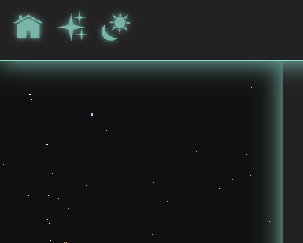
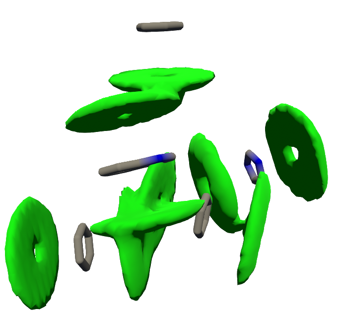
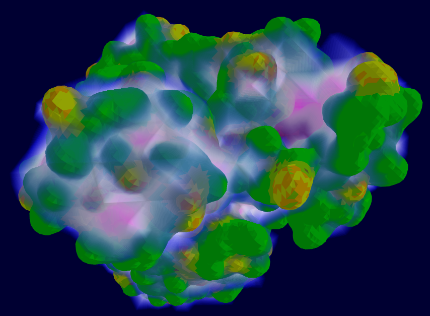
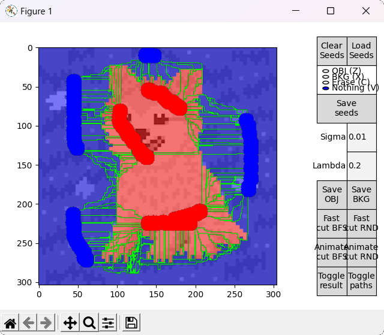

Projects

chocomint-css
Minimal CSS framework based on "Simple CSS" (by Kev Quirk), with some extra effects.

thesis-qcb
[University] Master's Degree Thesis in Quantitative and Computational Biology titled "Physical characterization of protein and RNA binding sites and their visualization" (UniTN).

computational-biophysics-project
[University] MD simulation of a protein and the analysis of the obtained trajectories. Final project for "Computational Biophysics" (UniTN).
